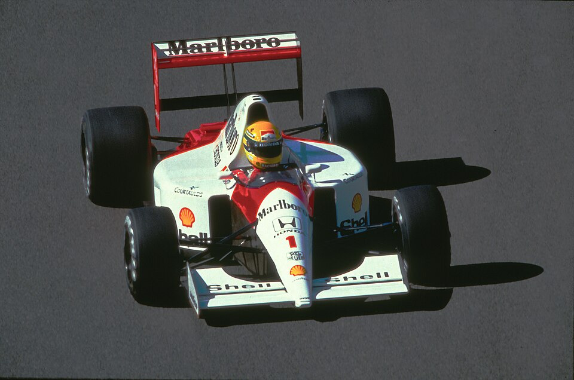

Circuit de Spa-Francorchamps
Country: Belgium | Ardennes forest · Lap length: 7.004 km · Race laps: 44

About This Track
Spa-Francorchamps is one of the longest and fastest tracks in Formula 1 at 7.004 km per lap. Set in the Ardennes forest in eastern Belgium, it combines long straights with blind crests and dramatic elevation changes.
Weather can change lap by lap — sunshine at La Source and heavy rain at Stavelot is common. Teams must gamble on tyre strategy more here than at almost any other circuit, and rain specialists often shine.
Eau Rouge-Raidillon remains the circuit's most famous sequence: a flat-out uphill left-right-left through a compression at over 300 km/h in modern F1 cars. Every driver remembers their first lap through it.
The Kemmel Straight leads into Les Combes, one of the best overtaking zones on the calendar. DRS and active aero in 2026 make slipstream battles into Les Combes and the Bus Stop Chicane especially important.
Spa rewards brave drivers and punishes mistakes. Gravel traps and barriers sit close to the edge of the track, and a spin at Pouhon or Blanchimont can end a race instantly.
History
Spa first hosted Formula 1 in 1950 on a fearsome 14 km layout through public roads. The old circuit was shortened repeatedly for safety, but the modern 7 km track keeps the sport's most dramatic corners.
The Belgian GP was a regular calendar fixture but dropped out during periods when the old layout was deemed too dangerous. The current circuit returned in the 1980s and has been a permanent home since.
Ayrton Senna described Eau Rouge in the rain as a test of courage. Michael Schumacher won six times at Spa; Lewis Hamilton and Max Verstappen have added multiple modern victories.
The 1998 race started in torrential rain and produced one of the biggest first-lap pile-ups in history. Spa's unpredictability is part of its identity — the best car does not always win here.
Fans travel from across Europe for the Belgian GP weekend. The forest setting, unpredictable weather, and legendary corners make it one of the most beloved venues in motorsport.
Famous Sections
La Source, Eau Rouge-Raidillon, Pouhon, and Blanchimont define this classic European venue. Bus Stop Chicane is the main overtaking zone after the Kemmel Straight.